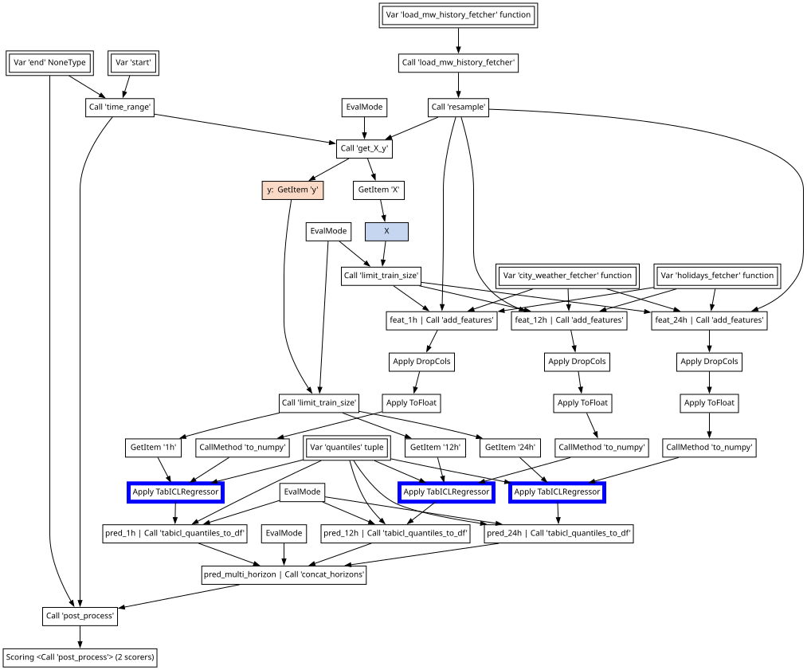

Building extensive pipelines with DataOps
Basic pipelines have limitations!
Limitations
- Pipelines require a single matrix as input to trasform
- Multiple tables as inputs are not supported
- The number of samples cannot change inside a pipeline
Reality
- In some cases, the feature matrix needs to be assembled within the pipeline
- Data may be spread over multiple tables (e.g., relational databases)
- The number of samples may be altered (e.g., by aggregating rows)
Textbook ML
\(X \in \mathbb{R}^{n \times p},\ y \in \mathbb{R}^n\)
\(\hat{y} = f_{\hat{\theta}}(X)\)
estimator = TabICLRegressor()
cross_validate(estimator, X, y)
estimator.fit(X_train, y_train)
estimator.predict(X_new)Data-Science Practice

Textbook ML
\(X \in \mathbb{R}^{n \times p},\ y \in \mathbb{R}^n\)
\(\hat{y} = f_{\hat{\theta}}(X)\)
estimator = TabICLRegressor()
cross_validate(estimator, X, y)
estimator.fit(X_train, y_train)
estimator.predict(X_new)Data-Science Practice

Textbook ML
\(X \in \mathbb{R}^{n \times p},\ y \in \mathbb{R}^n\)
\(\hat{y} = f_{\hat{\theta}}(X)\)
estimator = TabICLRegressor()
cross_validate(estimator, X, y)
estimator.fit(X_train, y_train)
estimator.predict(X_new)Data-Science Practice

To build a ML pipeline, we need to:
- preprocess the data, perform feature engineering, train a model …
- so we need to learn a state…
- while we evaluate the predictive performance…
- as we avoid data leakage…
- with multi-source input …
How do we deal with that?
With Data Ops…
Data wrangling is part of the pipeline: filtering, resampling, aggregations, joins, …
Then, after preparing the data:
- Cross-validate without data leaks.
- Tune choices with validation scores.
- Replay on new inputs.
Basic example
Declare the pipeline

Hyperparameter tuning 1/2
Tuning hyperparameters in scikit-learn can be complex…
pipe = Pipeline([("dim_reduction", PCA()), ("regressor", Ridge())])
grid = [
{
"dim_reduction": [PCA()],
"dim_reduction__n_components": [10, 20, 30],
"regressor": [Ridge()],
"regressor__alpha": loguniform(0.1, 10.0),
},
{
"dim_reduction": [SelectKBest()],
"dim_reduction__k": [10, 20, 30],
"regressor": [Ridge()],
"regressor__alpha": loguniform(0.1, 10.0),
},
{
"dim_reduction": [PCA()],
"dim_reduction__n_components": [10, 20, 30],
"regressor": [RandomForestRegressor()],
"regressor__n_estimators": loguniform(20, 200),
},
{
"dim_reduction": [SelectKBest()],
"dim_reduction__k": [10, 20, 30],
"regressor": [RandomForestRegressor()],
"regressor__n_estimators": loguniform(20, 200),
},
]Hyperparameter tuning 2/2
With Data Ops, you can define the search space with the estimator:
Choices can be made about any part of the pipeline:
Run hyperparameter search
# fit the search
search = regressor.skb.make_randomized_search(
scoring="roc_auc", fitted=True, cv=5
)
# save the best learner
best_learner = search.best_learner_
best_learner.predict({"data": new_data})Use Optuna as backend:
# fit the search
search = regressor.skb.make_randomized_search(
scoring="roc_auc", fitted=True, cv=5, backend="optuna"
)Debug the entire plan with the report
Data Ops go beyond tabular data!
Data Ops make no assumption about the underlying data, or code.
In conclusion
- Data science is harder than what you learn in classes
- A full ML pipeline involves preprocessing, feature engineering and model training
- We want to learn a “state” (it’s called machine learning after all), evaluate performance and do so while avoiding data leakage
- Data Ops are a framework that allows to build stateful pipelines for arbitrary code and inputs
- Data Ops extend the scikit-learn
fitpredictparadigm to multi-table inputs, feature and target construction, sample filtering … - A Data Ops graph can be exported as a Learner, a single object that includes all learned states to work on new data
What we have seen in this chapter
- Data leakage is a problem, and in practice pipelines are not enough
- Data Ops can be used to build complex multi-table plans
- Data Ops track all the operations that are executed and replay them with the same parameters
- Choose functions generate complex hyperparameter grid in place
- Learners can be exported to be used with new data